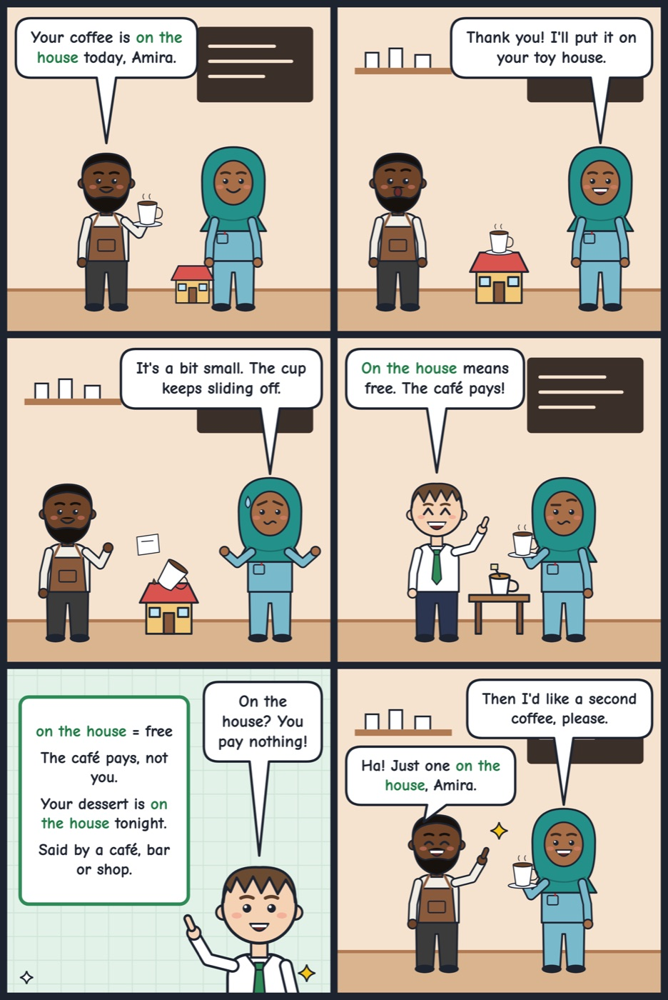

on the house
Given free by a restaurant or shop.
Your dessert is on the house tonight.
On the house means free. The business pays, not you.
Your turn
When did a café or restaurant give you something on the house?
When did a café or restaurant give you something on the house?
See it in a comic
